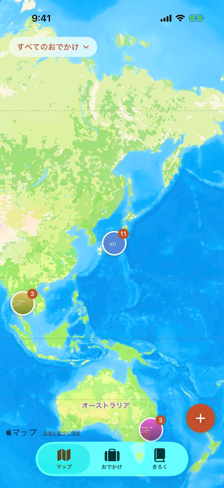
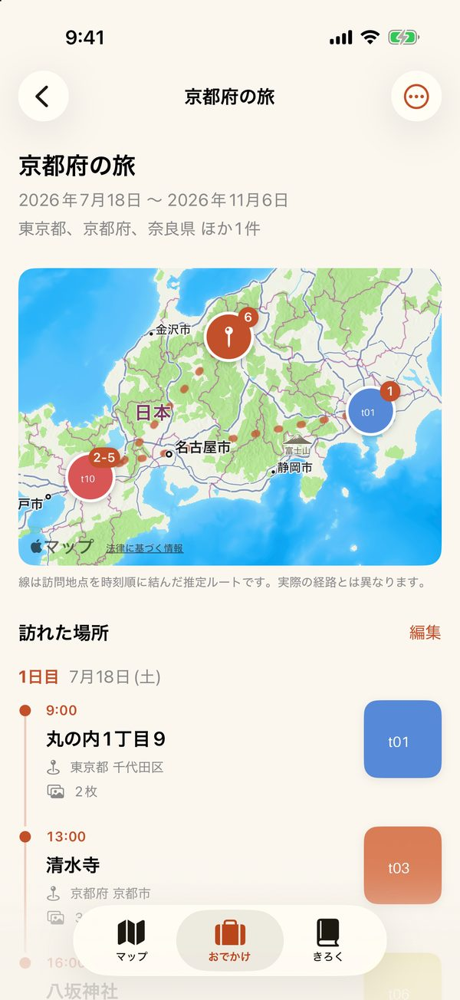
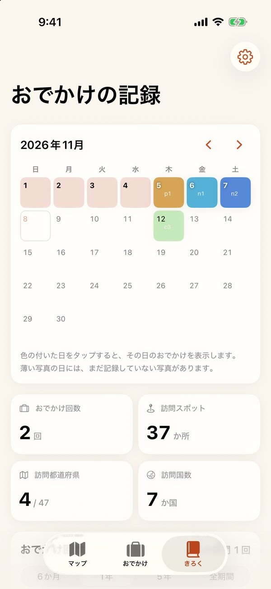
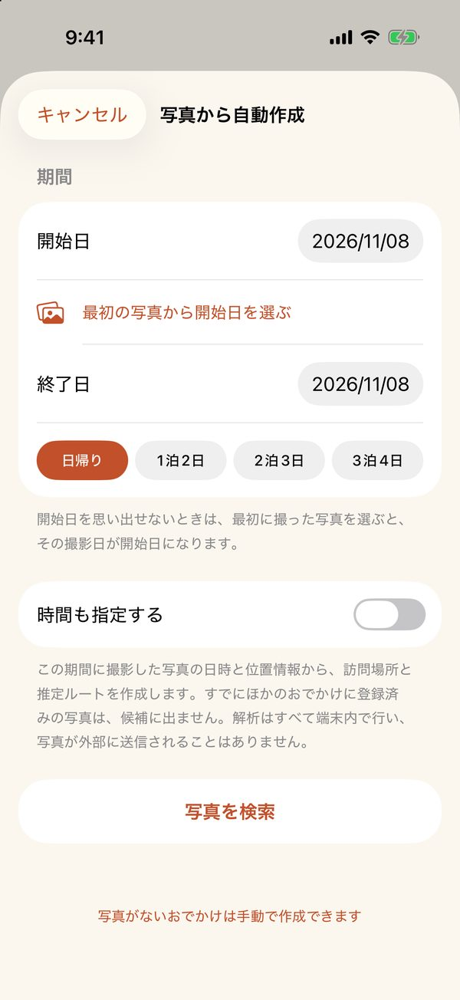

期間を選ぶだけで、おでかけが地図になる。
Trippacy（トリッパシー）は、カメラロールの写真に残っている撮影日時と位置情報から、訪れた場所と移動ルートを自動でまとめるiOSアプリです。日記を書く手間はいりません。期間を選んで、内容を確認して保存するだけです。
名前は Trip（おでかけ）・Privacy（プライバシー）・Legacy（思い出を残す）から。記録はすべて端末の中だけに保存されます。
iOS 旅行記録 地図 写真 アカウント不要



写真から自動で記録
日帰りや1泊2日など期間を選ぶと、その間の写真から訪れた場所と推定ルートを作ります。場所の名前も自動で付きます。
地図で思い出をたどる
これまでのおでかけをひとつの地図に。「思い出をたどる」で、訪れた順に写真をめくりながら地図を移動できます。
カレンダーで振り返る
おでかけした日がひと目でわかります。まだ記録していない写真がある日からも、記録を始められます。
記録は端末の中だけ
写真の解析はすべて端末内で行います。写真や記録をサーバーへ送ることはなく、アカウント登録も不要です。
広告非表示プラン
無料ですべての機能を使えます。アプリ内課金で広告を非表示にできます。
- 月額プラン：200円
- 年額プラン：1,980円（初回1週間無料）
- 買い切り：9,800円
価格は日本の App Store での税込価格です。サブスクリプションは App Store のアカウント設定から解約できます。
サポート・よくある質問
- 写真が地図に表示されません
- 位置情報が付いていない写真は地図に表示されません。iPhoneの「設定」→「プライバシーとセキュリティ」→「位置情報サービス」→「カメラ」を「このAppの使用中」にすると、以後の写真に位置情報が記録されます。LINEなどで受け取った写真は、位置情報が削除されていることがあります。
- 写真がない場所も記録できますか？
- はい。地図を長押しするか、おでかけの画面の「…」から「場所を手動で追加」を選んでください。
- 機種変更したときに記録を引き継げますか？
- 記録は端末の中に保存されます。設定の「端末のバックアップに含める」がオンの場合、iCloudバックアップやパソコンへのバックアップから新しい端末に復元できます。また、「設定」→「バックアップとデータ」→「JSONに書き出す」で記録をファイルに保存し、新しい端末の「JSONから読み込む」で移すこともできます。写真そのものは、写真アプリ（iCloud写真など）で引き継いでください。
- 購入した広告非表示が反映されません
- アプリの「設定」→「購入を復元」をお試しください。購入時と同じ Apple アカウントでサインインしている必要があります。
- サブスクリプションを解約したい
- iPhoneの「設定」→ 自分の名前 →「サブスクリプション」から解約できます。アプリを削除しただけでは解約されません。
解決しない場合や、ご意見・ご要望は下記までお送りください。アプリの「設定」→「お問い合わせ」からも送れます。